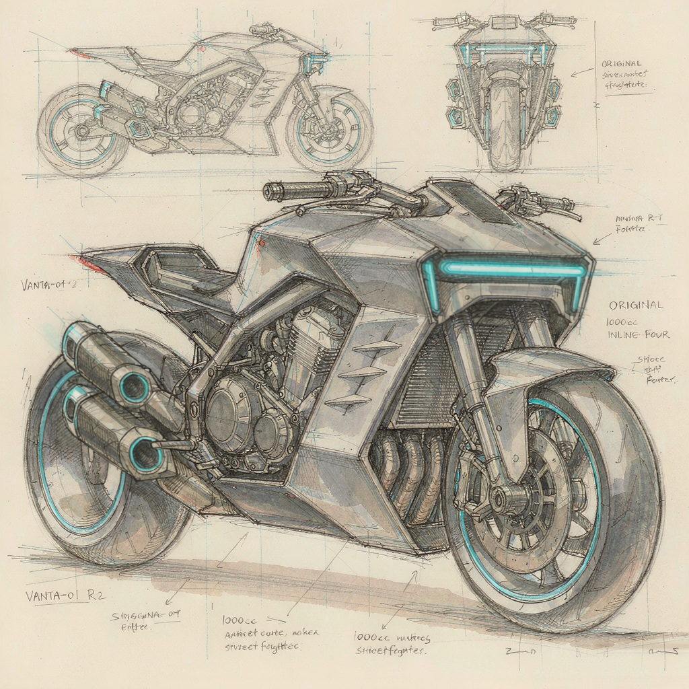
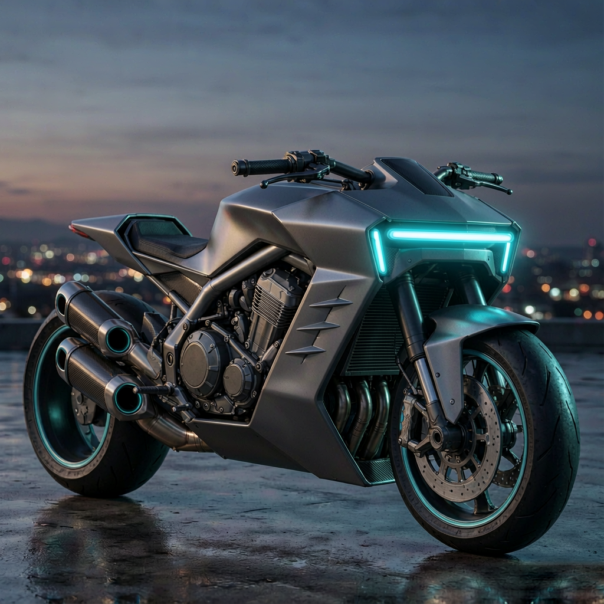
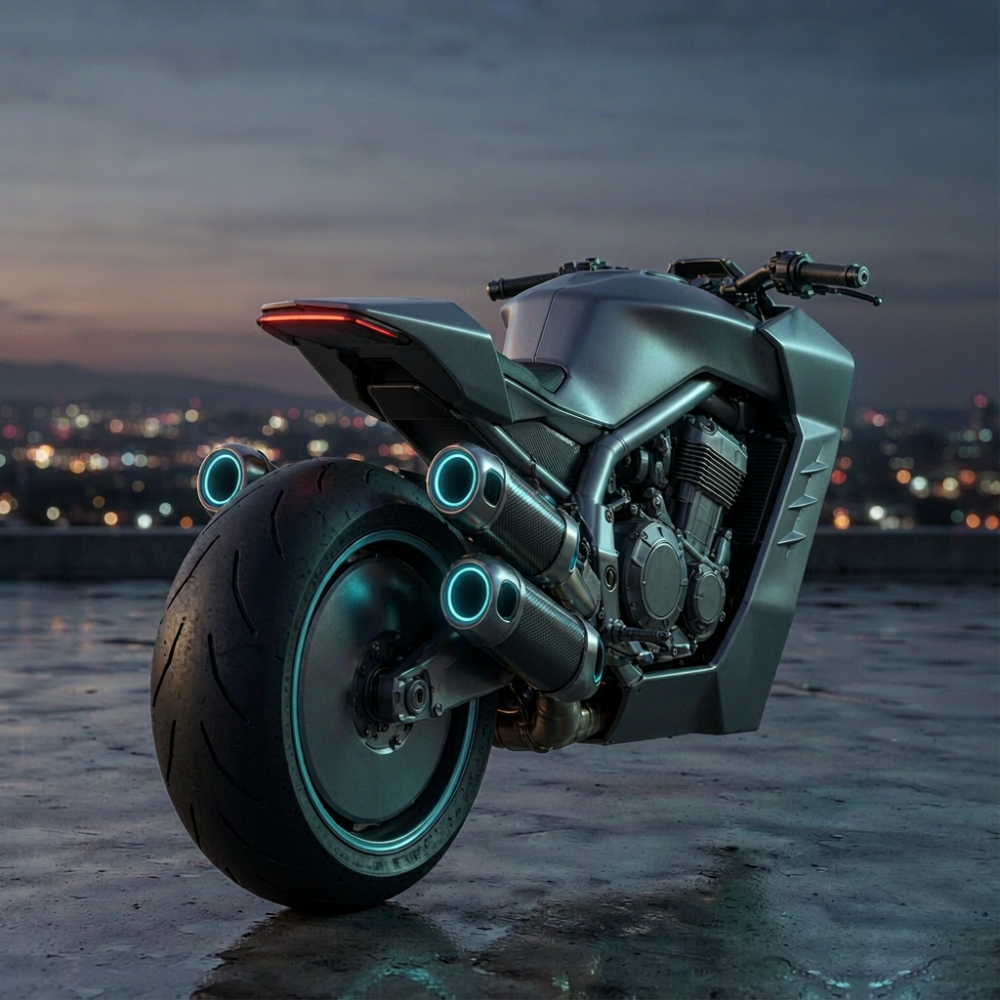

大灯线条做减法 · 排气改小口径圆形 · 998cc 直列四缸与车身造型不变 · 草图 + 两张照片级渲染
这一版是「减法」：把 v2 前脸上过密的灯组线条和尾部厚重的消音器都收掉，让折面车身本身成为主角。



| 大灯 | 分段点阵光幕 + 两条长竖向 DRL + 下方蜂窝网格（T 形，线条多）→ 一条连续无分段的宽幅光带，仅两端留极短圆角收头；点阵、网格、长竖 DRL 全去掉。尺寸不缩小，仍然大而醒目。 |
| 排气 | 四个大六边形斜切消音器 + 大块碳纤维隔热罩 → 四个小口径圆形短管，双侧各两根，管口直径约减半，细钛合金圈 + 极细青色内环，内嵌尾壳；去掉大罩子。 |
| 完全不变 | 加宽加厚的折面单体壳与抬高肩线、每侧三道斜向鳍片、998cc 直列四缸 + 水箱 + 四根头段、封闭碟轮青色光环、悬浮单座、短上翘尾 + 细红线尾灯、哑光钛灰 / 电光青配色、双侧四出布局。 |
| 场景 | v2 暗色湿地夜景 → 本版生图落在黄昏湿地天台（蓝灰晚霞 + 城市散景），布光更亮，小排气口和光带细节更容易看清。 |
| 发动机 | 水冷 DOHC 16 气门 直列四缸 · 998 cc（78.0 × 52.2 mm）· 13.0 : 1 |
| 功率 / 扭矩 | 147 kW / 200 PS @ 11,500 rpm · 112 N·m @ 9,000 rpm |
| 底盘 | 轴距 1,470 mm · 整备 214 kg · 前 120/70 ZR17 / 后 200/55 ZR17 · 座高 825 mm |
| 性能目标 | 0–100 km/h 3.1 s · 极速 265 km/h（电子限速） |
改成圆形四出后，形态上确实比 v2 更靠近 Z1000 的经典布局，这点不回避。差异继续放在实现细节与整体设计语言上：
| 维度 | 处理方式 |
|---|---|
| 前脸仍是原创 | 单条连续宽幅光带 + 极短圆角收头，不是锐角双眼灯、不做 T 形灯组、不做叠层侧罩；这是本车最强的识别点。 |
| 圆形四出怎么做自己的 | 小口径（约为常规消音器一半）、短管内嵌折面尾壳、双侧阶梯错位、细钛圈 + 极细青色内环、无外露大消音筒与碳纤维大罩；光带、轮缘、排气口三处青色细环是同一套设计语言。 |
| 明确避开 | 无 Z 字标、无厂商名 / 商标、配色不含绿色、不用叠层侧罩、不用四筒并列大排气。 |
| 法律边界 | 虚构代号 VANTA-01 R3；草图手写标注为设计说明与无意义笔迹，不含厂商名；未使用实车照片、车标或专利造型。 |
VANTA-01 R3 · 概念设计稿 · 参数均为设定值，非实车数据